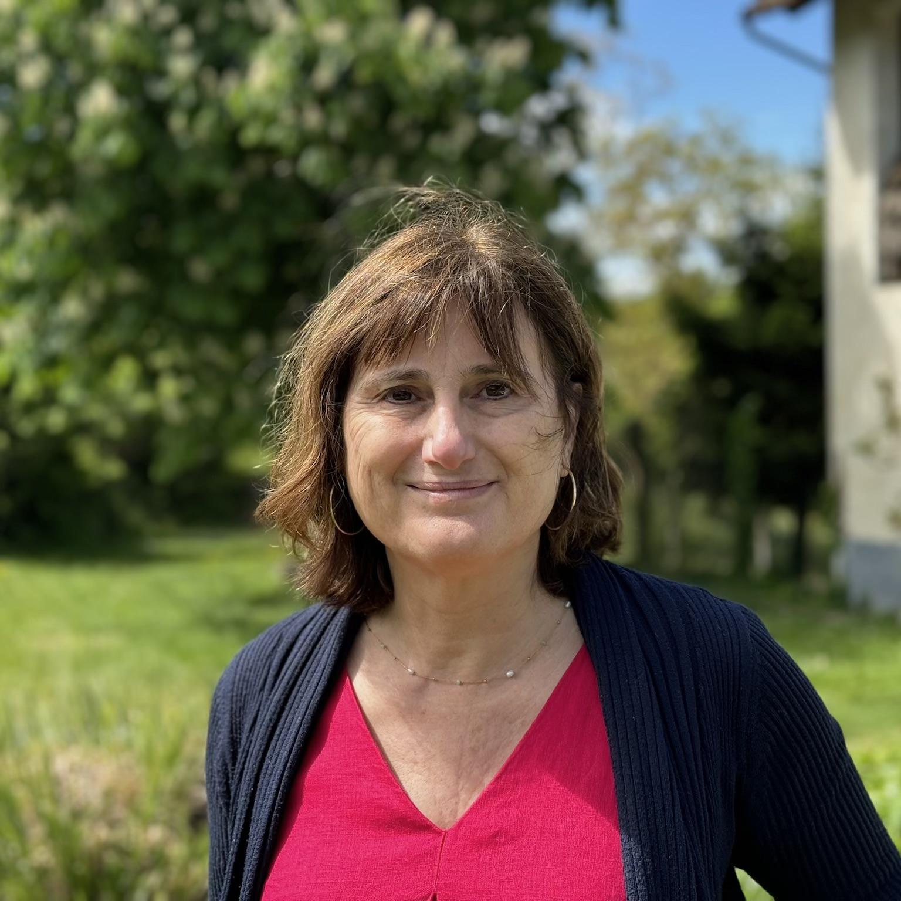
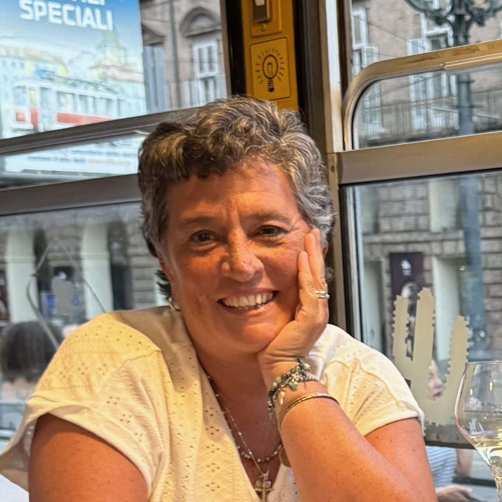

<section id="about">
    <div class="container section">
        <div class="row">
            <div class="col-lg-12 text-center">
                <h2 class="section-heading">Who we are
                </h2>
            </div>
        </div>
        <div class="row bio">
            <div class="col-lg-4">
                
            </div>
            <div class="col-lg-8">
                <span class="bio-name">Laura Vinti</span> was born and raised in Italy. After spending 17 years in Heidelberg, Germany, and 15 years in Fairfax, VA, she now lives in Florence, where she organizes tours to Italy and teaches Italian Language and Culture to American students studying abroad. In the past, she taught at the universities of Heidelberg and Mannheim in Germany, at George Mason University in Fairfax, VA, and at the Florence campuses of Gonzaga University and Syracuse University. Laura’s passions include history, art, and writing; discovering hidden treasures in Italy; and sharing her love of her home country and its history with anyone who will listen. 
                <br/><br/>
                Laura holds an MA in Foreign Languages and Literature and an MFA in Creative Writing.
            </div>
        </div>
        <br/>
        <div class="row bio">
            <!-- boostrap v4.0+ -->
            <!-- <div class="col-lg-4 d-block d-sm-none"> -->
            <!-- bootstrap v3 (this site) -->
            <div class="col-lg-4 visible-xs-block hidden-xl">
                <!-- hidden on large screens -->
                
            </div>
            <div class="col-lg-8">
                <span class="bio-name">Livia Grimaldi</span> lives in Naples. She loves to travel, both professionally and in her free time, and has a special talent for discovering lesser-known, beautiful spots in her beloved Italy. Besides organizing tours, she has been working extensively in classical music management for the past several years and plays a very active role in promoting classical music in Naples. She has co-organized many prestigious events, most recently Piano City Napoli and Spinacorona.  Livia has been President of the network ’Namusica, whose aim is to promote music and art in their many forms and with different media.
                <br/><br/>
                Livia holds an MA in Foreign Languages and Literature and a specialization in Cultural Management.
            </div>
            <!-- boostrap v4.0+ -->
            <!-- <div class="col-lg-4 d-none d-md-block"> -->
            <!-- bootstrap v3 (this site) -->
            <div class="col-lg-4 hidden-xs show-xl-block">
                <!-- hidden on small screens -->
                
            </div>
        </div>
    </div>
</section>